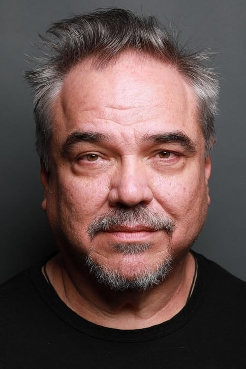
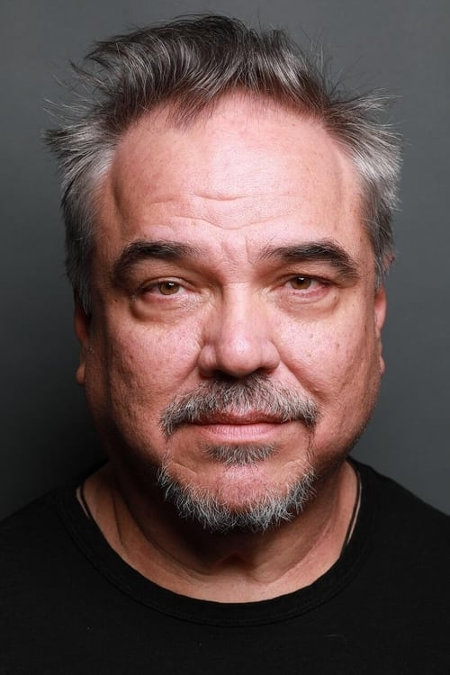

Personagens
Joel foi interpretado por Troy Baker, enquanto Ellie foi interpretada por Ashley Johnson. Suas performances foram gravadas em maior parte usando tecnologia de captura de movimentos; aproximadamente 85% das animações foram obtidas com captura de movimento, com os elementos restantes de áudio sendo posteriormente gravados em um estúdio de som. A equipe rapidamente sentiu que Johnson encaixava-se no papel de Ellie, porém passaram muito mais tempo selecionando um ator para Joel já que a química entre os dois personagens era imperativa para o jogo. Depois de Baker e Johnson terem realizado um teste juntos, os desenvolvedores perceberam que o primeiro funcionava perfeitamente como o personagem apesar da idade jovem do ator. Druckmann afirmou que foram a voz e movimentos de Baker que o fizeram ser escolhido. Os dois atores contribuíram muito para o desenvolvimento dos personagens. Por exemplo, Baker conseguiu convencer Druckmann de que Joel se importaria com Tess por causa de sua solidão, enquanto Johnson convenceu o diretor a reescrever Ellie de maneira mais forte e defensiva. Alguns dos diálogos foram improvisados pelos atores; Druckmann comentou que isso ocorreu pois seu roteiro incluía muitas falas desnecessárias durante seções de jogabilidade, permitindo que os atores escolhessem o que achavam ser necessário. Os personagens de Joel e Ellie eram a base de The Last of Us; o desenvolvimento entre os dois foi estabelecido primeiro e os conceitos restantes vieram depois. Desde o início a equipe desejava que o título tivesse dois protagonistas com arcos de história individuais. O jogador assume o controle de Ellie durante o segmento de inverno. Os desenvolvedores queriam que essa mudança permanecesse em segredo antes do lançamento a fim de surpreender o público; a mesma coisa foi feita com a imunidade da personagem e também o prólogo, em que os jogadores assumem o comando de Sarah. A mudança de controle de Joel para Ellie significa uma alteração no papel de protetor, ecoando as ideias anteriores de Druckman quando era estudante. As interações entre os personagens foram inspiradas na relação de Nathan Drake e Tenzin em Among Thieves, que por sua vez foram baseadas em Ico. Os protagonistas representavam as duas eras mostradas na história: Joel o mundo antes do surto da infecção, tendo passado a maior parte da sua vida durante esse período, e Ellie o mundo pós-surto, já tendo nascido no pós-apocalipse. Enquanto o primeiro está emocionalmente ferido pela perda que passou no passado, a segunda mantém uma visão otimista por ter se acostumado com o mundo destruído; o tempo em que dois passaram juntos fazem essas qualidades se sobreporem, com Joel ficando mais jovial e Ellie aprendendo habilidades de sobrevivência.
Apesar de Druckmann inicialmente ter escrito Joel usando como inspiração o personagem Llewelyn Moss do filme No Country for Old Men, que ele via como "bem quieto, bem frio sob pressão", a interpretação de Baker fez de Joel uma pessoa mais emocional e o evoluiu de modo diferente. A narrativa por fim tornou-se uma exploração do quanto um pai está disposto a salvar uma criança; Joel inicialmente está disposto a se sacrificar, evoluindo para estar disposto a sacrificar seus amigos até finalmente sentir que estaria disposto a sacrificar toda a humanidade para salvar Ellie.[58] O diretor de criação achou que os jogadores, particularmente pais, poderiam simpatizar com o personagem e sua ligação com a menina. Baker acredita que Joel descobriu a moralidade no decorrer da narrativa, conseguindo trabalhar a diferença entre perda e sacrifício, com sua verdadeira personalidade começando a transparecer. Baker leu uma frase no perfil do personagem ao fazer o teste para Joel que dizia que este ainda tinha "algumas linhas morais restantes para cruzar", algo que se tornou o "ponto de ancoragem" do personagem para o ator. O ator teve grandes dificuldades para filmar o prólogo, que tinha cenas de Joel com sua filha Sarah, interpretada por Hana Hayes. Druckmann assistiu as imagens feitas no primeiro dia de gravação e sentiu que elas poderiam ser melhoradas. O diretor explicou ao ator como interpretar a cena quando foram gravá-la novamente, sentido que o resultado fora o melhor até então. Apesar de Baker inicialmente ter achado sua tomada muito "mecânica", ele retroativamente percebeu que antes estava tentando impressionar o público com sua atuação e que isso "não era o que a cena precisava".
Johnson enfrentou desafios ao interpretar cenas que deixavam-na desconfortável, comentando que "Houve dias quando filmaríamos coisas que me faziam um pouco desconfortável até mesmo na minha idade". A atriz achava que jogos eletrônicos raramente possuíam personagens femininas fortes como Ellie, expressando por esse motivo entusiasmo por interpretar o papel. Druckmann lembrou que ele e Straley estavam tendo ideias para Among Thieves quando criaram um personagem mudo que chamaria o jogador a segui-lo, desenvolvendo assim uma relação "linda" apenas pela jogabilidade. Este conceito nunca foi incluído no jogo final, porém a ideia ressurgiu quando a equipe estava discutindo The Last of Us, o acabando por inspirar Ellie. Druckmann também se inspirou nas guerras ocorridas na Síria e Afeganistão para criar a personagem, achando que o conflito era uma constante familiar para as crianças desses países, algo que seria semelhante à visão de Ellie.
A personagem de Tess originalmente seria a principal antagonista de The Last of Us, perseguindo Joel por um ano até um último confronto no qual seria morta por Ellie. Entretanto, os desenvolvedores acharam difícil de acreditar que Tess antagonizaria Joel por tanto tempo; isto foi resolvido ao ajustar a história de maneira significativa. A atriz Annie Wersching ficou impressionada pelo roteiro e a habilidade de Druckmann para escrever personagens femininas fortes. O diretor sempre evitou influências externas, como a representação de mulheres na mídia, ao escrever as personagens femininas do enredo como Tess e Ellie, querendo criar sua própria história. O personagem de Bill, interpretado por William Earl Brown, é revelado como sendo homossexual em certo ponto do jogo. Druckmann inicialmente deixou isso vago, porém foi inspirado a alterar algumas falas para refletir mais a sexualidade do personagem após uma leitura conjunta do roteiro. O diretor explorou o conceito de afirmações contraditórias para poder deixar Bill mais interessante; apesar do personagem afirmar que se apegar a pessoas diminui suas chances de sobrevivência, é revelado que o próprio já teve um parceiro com quem realmente se importava. O papel de Bill na história também era dar voz às preocupações de Joel sobre escoltar Ellie, já que Joel nunca comenta sobre o assunto; Druckmann falou que "O motivo de ter Bill lá é para Bill poder realmente falar isso para Joel, e avisar Joel sobre a questão". Nolan North, que interpretou o protagonista Nathan Drake da série Uncharted, foi escolhido para fazer o papel de David em The Last of Us. O ator imediatamente aceitou o trabalho ao ser abordado pelo diretor de criação, gostando da diversidade do roteiro em relação a seus papéis anteriores. North abordou a personalidade de David de várias perspectivas, considerando o personagem um "sobrevivente". North sentiu empatia por David, afirmando que suas ações eram compreensíveis ao se considerar a situação apocalíptica. Ele sentiu que o personagem estava tentando proteger Ellie, que era vista como um "lampejo de esperança".
A equipe achou que o mundo pós-apocalíptico e o gênero de sobrevivência lhes deram a oportunidade de melhor desenvolver seus personagens. Os desenvolvedores se inspiraram em seu trabalho na série Uncharted e usaram no desenvolvimento de The Last of Us seu conhecimento de parelhar personagens com jogabilidade e história. Eles também se inspiraram em romances como The Road de Cormac McCarthy e City of Thieves de David Benioff, além do filme No Country for Old Men, percebendo que todos incluíam personagens memoráveis. Straley afirmou: "Podemos fazer que você como jogador sinta mais do que é realmente existir dentro de um mundo onde toda bala conta e cada passo que você dá é uma escolha consciente que pode fazer ou quebrar sua existência". A equipe também achou que as "pressões do mundo" lhes permitiram desenvolver melhor seus personagens, com a pressão forçando os personagens a tomarem decisões interessantes e assim permitindo um melhor desenvolvimento.

 Joel(Troy Baker), Ellie(Ashley Johnson), Marlene(Merle Dandridge), Tess(Annie Wersching), Tommy(Jeffrey Pierce), Bill(William Earl Brown), Henry(Brandon Scott) e Sam(Nadji Jeter)
Joel(Troy Baker), Ellie(Ashley Johnson), Marlene(Merle Dandridge), Tess(Annie Wersching), Tommy(Jeffrey Pierce), Bill(William Earl Brown), Henry(Brandon Scott) e Sam(Nadji Jeter)